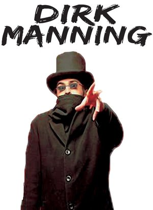

Special Guests
Each year Animarathon invites special guests to speak. Past Special Guests have included Voice Actors and Actresses, Artists, Writers, and Online Personas.
Here you can see who will be present at Animarathon 2017!
Streaming Superstar: GeePM

Coming from a 8-Year background of game Live-Streaming, Vinesauce's newest member GeePM hails from humble Northwest Ohio. Best known for his "Miiverse is Hell", "Roblox is Hell" and "Games Repainted" series, he's an energetic friendly and patented "Soft Buff Boy" who's goal is to help make you smile at least once during streaming! Be sure to check out his "Miiverse is Hell Live!" panel and join in on the weird, and strange mysteries of the Miiverse!
Caring Cosplayer: Blitzkreig Cosplay
Andrew is a writer/cosplayer from central Ohio who goes by the name Blitzkrieg Cosplay. He's been costuming and attending conventions since 2013. Often times he attends cons on behalf of The Tangent-Bound Network as one of their official con correspondents, giving reviews on their flagship show, The Tangent-Bound Podcast. His main passion is giving back through his cosplay or, rather, causeplay. Through his membership with the Heroes Alliance, Rebel Legion, 501st Legion and Columbus Ghostbusters, Andrew supports wonderful causes such as Make a Wish and Autism Speaks. He is a big believer in cosplay equality and believes that cosplay is about having fun and exploring one's self through creativity and imagination.
Macabre Maestro: Dirk Manning
Dirk Manning is best known as the writer/creator of comic series such as the “Cthulhu Noir” TALES OF MR. RHEE and the enthralling horror anthology series NIGHTMARE WORLD and Love Stories (To Die For), all released by Devil’s Due Publishing. Dirk is also the author of the ongoing inspirational column/book collection WRITE OR WRONG: A Writer's Guide Tt Creating Comics (Caliber/Bleeding Cool). More of Dirk’s gripping and exciting stories can be read in comic titles such as The Legend Of OZ: The Wicked West (Aspen/Big Dog Ink) and Dia De Los Muertos (Image Comics/Shadowline) among various other anthologies. Dirk has also written short films for the horror film anthology series BLACKBOX TV (YouTube) and prose stories the RPG series Clockwork: Dominion (Reliquary Game Studios). Dirk always has copies of his work with him at his table – and autographs/book signings are always free!
Don't let Dirk’s penchant for writing horror comics and his tongue-in-cheek publicity photo with the black hat and scarf fool you, as he’s a very amicable and approachable creator who’s known as one of the “must visit” creators in Artist Alley across the convention circuit. Whether you’re a fan of well-executed horror or an aspiring creator looking for advice regarding how to “break-in” to the comic industry, your experience at the convention won’t be complete without stopping by Dirk Manning’s table to chat with him and become familiar with his work. When not on the road Dirk lives on the Internet and can be found online at www.DirkManning.com as well as at Facebook, Twitter, Instagram, and Tumblr @dirkmanning.